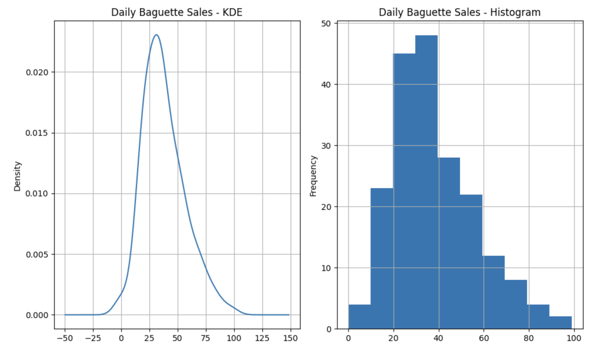
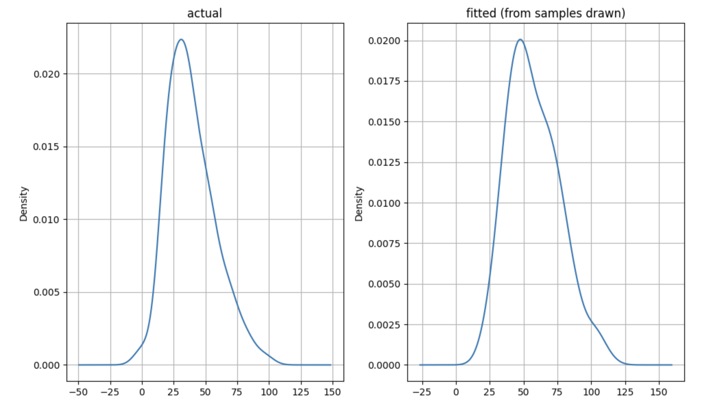
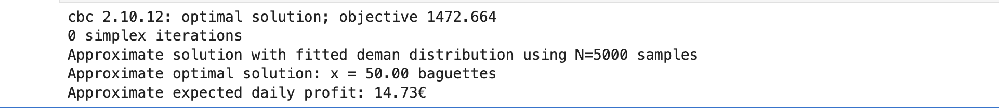

The Synergy Between Statistics and Stochastic Optimization
Synergy and complementarity are terms that aptly describe the relationship between machine learning and optimization. In machine learning, optimization is often the tool used to determine the best parameters for a model. For instance, when fitting a straight line to data, optimization helps identify the slope that best represents the relationship.
My interest in decision-making under cost constraints led me to explore stochastic optimization. This field is particularly relevant for those aiming to make data-driven decisions while explicitly accounting for:
- Uncertainty in the decision variables of an optimization problem.
- The sequential or hierarchical nature of decision variables, where some decisions influence others.
Stochastic optimization encompasses various approaches, but I will focus on one here. In this approach, problems are structured sequentially, with uncertainty typically associated with the primary decision variables, which are treated as random variables. Once these variables are realized, the optimal values for the dependent variables are determined accordingly.
Interestingly, the interplay between statistics and optimization in this context contrasts with what we observe in machine learning. Here, statistical estimation informs and drives the optimization process. This synergy between the two fields highlights their potential to complement each other. As data collection and analysis techniques continue to evolve, I anticipate that stochastic optimization will gain prominence, fostering collaboration between machine learning and optimization practitioners.
Practical Example
To illustrate the role of statistical estimation in a simplified stochastic optimization problem, consider a bakery that sells baguettes. Each morning, the bakery must decide how many baguettes to bake, knowing that daily demand is uncertain. The challenge lies in understanding this uncertainty and fitting an appropriate probability distribution to model the demand. This step is crucial for making informed decisions that balance the risks of overproduction and underproduction.
Here is the cost data. The cost of baking a baguette is 53 cents, and the selling price is 90 cents. I used this article to arrive at pricing information. The gist of the price information is: \[ \text{Costs} \times \text{Profit Index} = \text{Selling Price} \]
The article uses a profit index of \(1.7\), the selling price is available from the data. I am going with the version that you can use baguette’s for up to a day, so what you need to bake each day is what is the sum of what is held (unsold) from yesterday and what you expect to sell today. This is based on an adaptation of this model.
Here are the basic steps to solve the problem:
- Profile the Data I am going to build on the preview I talked about in my previous post. The data for this example comes from kaggle. The code for downloading the data and preliminary data exploration is available in this notebook. As discussed in the previous post, there are two trends in this data. If you restrict the time period to the last \(40\) weeks then the data is unimodal with a mean of \(38\) and a variance of \(341\). The variable of interest, the number of baguettes sold everyday, is a count. The histogram and KDE are shown below.

The code for the detailed data profile for the last \(40\) weeks of data is available here.
- Statistical Estimation: The demand is a count variable that is over dispersed, that is, the variance is larger than the mean. We cannot use a Poisson distribution for the demand because of this over dispersion. For a Poisson distributed random variable, the mean and variance need to be identical, we can probably live with similar, but this is an order of magnitude difference. We can use a Negative Binomial distribution instead. This can work with over dispersed data. One interpretation of a Negative Binomial distribution is as a compound distribution. It is a distribution where one of the parameters is also a distribution, so you can think of it as a mixture of Poisson random variables where the rate parameter is a Gamma distribution. We have the daily arrival rates here (which happen to be integral, but in general, they do not need to be), we fit a Gamma distribution to the daily purchase rates using maximum likelihood estimation. This is available in
scipy.statspackage. We can then use the relationship between the Negative Binomial and its associated Gamma distribution to work out the details of the parameters of the Negative Binomial distribution. For the relationship between the Gamma and the Negative Binomial arameters, please see this wikipedia article. Please see this notebook for the details of the estimation. The fitted Negative Binomial distribution and the actual demand data are shown below.

If you are wondering why I am not doing maximum likelihood estimation on the Negative Binomial, but instead I am choosing to do it on the associated Gamma distribution, it is because the Gamma distribution is continuous. Once you have fitted the Gamma to the data, you can work out the associated (optimal) Negative Binomial. The scipy.stats package does not provide a fit method for the Negative Binomial, probably for this reason - the fact that you can always use the Gamma MLE to work this out.
- Stochastic Optimization: Here, I will outline the procedure, highlight the intuition behind it, and provide a link to the implementation. The primary decision variable is the number of baguettes to bake each day. This decision is influenced by the demand distribution and any unsold stock from the previous day. In essence, the total stock available (unsold stock plus freshly baked baguettes) must not exceed the expected demand for the day.
The demand distribution plays a pivotal role in guiding the optimization process. The implementation of this narrative leverages a mathematical modeling language for optimization, specifically AMPL (“AMPL: Advanced Modeling for Optimization Solutions — Ampl.com”). For details, refer to the bakery.mod section in the model implementation notebook. The book “Introduction to Stochastic Programming” (Birge and Louveaux 2011) served as an excellent resource, offering clear explanations and practical examples of real-world business problems that can be effectively addressed using stochastic optimization techniques.
So what are the results of doing all of this. To run an efficient business, when holding some inventory is allowed, with the price and cost data assumed, we should expect to bake about \(50\) baguettes a day and make \(14.73\) euro of average profit a day.

The primary goal of this post is to highlight how statistical estimation serves as a critical component of stochastic optimization. While the newsvendor model could be a better fit compared to the stock optimization model used here —the idea was to show that statistical estimation primes the optimization process.
If you are wondering why not just use the mean and what really do we get by working with the distribution, please check out the AMPL seafood stock optimization example. It provides the difference in profits between using the expected value and using the distribution. Retail margins are sometimes small. So doing this may matter.
References
Citation
@online{sambasivan2025,
author = {Sambasivan, Rajiv},
title = {Stochastic {Optimization}},
date = {2025-05-25},
url = {https://rajivsam.github.io/r2ds-blog/posts/stochastic_opt/},
langid = {en}
}